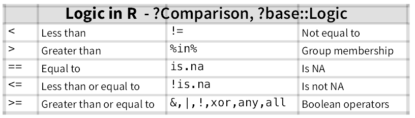
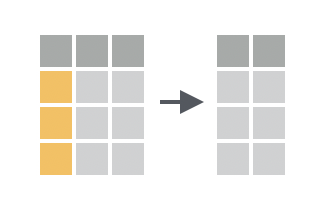

11 Transforming Data
Example data
To illustrate the Tidyverse-functions for data transformation, we use an example dataset teaching_method.csv from that data folder.
The fake dataset looks like this (only 6 first rows are depicted):
| student | teaching_method | city | time | statistics | cog_psy |
|---|---|---|---|---|---|
| 1 | method_A | Groningen | before | 6 | 10 |
| 2 | method_B | Nijmegen | before | 11 | 13 |
| 3 | control | Rotterdam | before | 12 | 10 |
| 4 | method_A | Utrecht | before | 10 | 9 |
| 5 | method_B | Nijmegen | before | 9 | 8 |
| 6 | control | Utrecht | before | 8 | 11 |
Students from universities in different Dutch cities were taught in statistics and cognitive psychology. Two teaching methods were compared (method A & B). There was in addition a control condition with no teaching at all. The knowledge about the subjects was tested before and after the courses with a test of 40 questions and 4 choices. The results of the test (number of correct answers) for the two subjects are shown in the variables statistcs and cog_psy.
Let’s load Tidyverse and the dataset:
The import dataset is a tibble and looks in the console of RStudio like this:
## # A tibble: 60 × 6
## student teaching_method city time statistics cog_psy
## <dbl> <chr> <chr> <chr> <dbl> <dbl>
## 1 1 method_A Groningen before 6 10
## 2 2 method_B Nijmegen before 11 13
## 3 3 control Rotterdam before 12 10
## 4 4 method_A Utrecht before 10 9
## 5 5 method_B Nijmegen before 9 8
## 6 6 control Utrecht before 8 11
## 7 7 method_A Leiden before 8 12
## 8 8 method_B Utrecht before 9 12
## 9 9 control Leiden before 8 10
## 10 10 method_A Groningen before 10 12
## # ℹ 50 more rows11.1 Selecting rows: Filter()

We have already selected rows or cases of data frames with base-R (see for last assignment or section 7.1.3 ). If we want to select all students from Rotterdam, we would do it in base-R like this:
With Tidyverse this can be done much more easily with function filter().
Of curse, you can use any logical comparisons that are possible in R. For example, if you want to have all rows, which are not a control condition or all rows where cog_psy is smaller 15:
This table gives an overview of of logical comparisons in R: 
11.1.1 Multiple criteria
logical “AND”
The great thing with Tidyverse is that you can very easy combine the filtering conditions. For instance, all cases in which the city is “Rotterdam” and the time is “after” and the teaching_method is not “control”.
| student | teaching_method | city | time | statistics | cog_psy |
|---|---|---|---|---|---|
| 13 | method_A | Rotterdam | after | 26 | 40 |
| 17 | method_B | Rotterdam | after | 30 | 33 |
| 19 | method_A | Rotterdam | after | 34 | 32 |
| 29 | method_B | Rotterdam | after | 22 | 23 |
The sign & is used in R as logical and.
logical “OR”
The sign | is used in R as logical or. For example, to select all rows, in which have test score in statistics lower 8 or in cog_psy lower 6.
| student | teaching_method | city | time | statistics | cog_psy |
|---|---|---|---|---|---|
| 1 | method_A | Groningen | before | 6 | 10 |
| 27 | control | Rotterdam | before | 4 | 12 |
| 29 | method_B | Rotterdam | before | 12 | 5 |
| 18 | control | Leiden | after | 6 | 16 |
| 21 | control | Nijmegen | after | 7 | 11 |
| 27 | control | Rotterdam | after | 4 | 11 |
More information about logical operators in R can be found for instance here
11.2 Sorting rows: arrange()

arrange() works similarly to filter() except that instead of selecting rows, it changes their order. It takes a data frame and a set of column names (or more complicated expressions) to order by.
| student | teaching_method | city | time | statistics | cog_psy |
|---|---|---|---|---|---|
| 27 | control | Rotterdam | before | 4 | 12 |
| 27 | control | Rotterdam | after | 4 | 11 |
| 1 | method_A | Groningen | before | 6 | 10 |
| 18 | control | Leiden | after | 6 | 16 |
| 21 | control | Nijmegen | after | 7 | 11 |
| 6 | control | Utrecht | before | 8 | 11 |
| 7 | method_A | Leiden | before | 8 | 12 |
| 9 | control | Leiden | before | 8 | 10 |
| 13 | method_A | Rotterdam | before | 8 | 13 |
| 16 | method_A | Nijmegen | before | 8 | 9 |
| 18 | control | Leiden | before | 8 | 13 |
| 25 | method_A | Groningen | before | 8 | 9 |
| 26 | method_B | Groningen | before | 8 | 9 |
| 9 | control | Leiden | after | 8 | 11 |
| 5 | method_B | Nijmegen | before | 9 | 8 |
| 8 | method_B | Utrecht | before | 9 | 12 |
| 23 | method_B | Nijmegen | before | 9 | 8 |
| 4 | method_A | Utrecht | before | 10 | 9 |
| 10 | method_A | Groningen | before | 10 | 12 |
| 22 | method_A | Utrecht | before | 10 | 11 |
| 28 | method_A | Leiden | before | 10 | 13 |
| 30 | control | Leiden | before | 10 | 12 |
| 2 | method_B | Nijmegen | before | 11 | 13 |
| 12 | control | Nijmegen | before | 11 | 13 |
| 24 | control | Groningen | before | 11 | 11 |
| 12 | control | Nijmegen | after | 11 | 12 |
| 3 | control | Rotterdam | before | 12 | 10 |
| 14 | method_B | Utrecht | before | 12 | 8 |
| 17 | method_B | Rotterdam | before | 12 | 10 |
| 19 | method_A | Rotterdam | before | 12 | 9 |
| 20 | method_B | Groningen | before | 12 | 10 |
| 21 | control | Nijmegen | before | 12 | 11 |
| 29 | method_B | Rotterdam | before | 12 | 5 |
| 3 | control | Rotterdam | after | 12 | 11 |
| 30 | control | Leiden | after | 12 | 10 |
| 15 | control | Leiden | before | 13 | 10 |
| 24 | control | Groningen | after | 13 | 11 |
| 15 | control | Leiden | after | 14 | 13 |
| 6 | control | Utrecht | after | 15 | 13 |
| 26 | method_B | Groningen | after | 15 | 35 |
| 11 | method_B | Utrecht | before | 16 | 8 |
| 23 | method_B | Nijmegen | after | 17 | 31 |
| 7 | method_A | Leiden | after | 19 | 33 |
| 29 | method_B | Rotterdam | after | 22 | 23 |
| 14 | method_B | Utrecht | after | 23 | 31 |
| 20 | method_B | Groningen | after | 25 | 36 |
| 1 | method_A | Groningen | after | 26 | 32 |
| 8 | method_B | Utrecht | after | 26 | 36 |
| 13 | method_A | Rotterdam | after | 26 | 40 |
| 22 | method_A | Utrecht | after | 26 | 31 |
| 5 | method_B | Nijmegen | after | 27 | 29 |
| 2 | method_B | Nijmegen | after | 28 | 40 |
| 11 | method_B | Utrecht | after | 28 | 31 |
| 16 | method_A | Nijmegen | after | 28 | 30 |
| 25 | method_A | Groningen | after | 28 | 32 |
| 10 | method_A | Groningen | after | 29 | 35 |
| 17 | method_B | Rotterdam | after | 30 | 33 |
| 4 | method_A | Utrecht | after | 32 | 37 |
| 19 | method_A | Rotterdam | after | 34 | 32 |
| 28 | method_A | Leiden | after | 37 | 35 |
Use desc() to re-order by a column in descending order:
| student | teaching_method | city | time | statistics | cog_psy |
|---|---|---|---|---|---|
| 28 | method_A | Leiden | after | 37 | 35 |
| 19 | method_A | Rotterdam | after | 34 | 32 |
| 4 | method_A | Utrecht | after | 32 | 37 |
| 17 | method_B | Rotterdam | after | 30 | 33 |
| 10 | method_A | Groningen | after | 29 | 35 |
| 2 | method_B | Nijmegen | after | 28 | 40 |
| 11 | method_B | Utrecht | after | 28 | 31 |
| 16 | method_A | Nijmegen | after | 28 | 30 |
| 25 | method_A | Groningen | after | 28 | 32 |
| 5 | method_B | Nijmegen | after | 27 | 29 |
| 1 | method_A | Groningen | after | 26 | 32 |
| 8 | method_B | Utrecht | after | 26 | 36 |
| 13 | method_A | Rotterdam | after | 26 | 40 |
| 22 | method_A | Utrecht | after | 26 | 31 |
| 20 | method_B | Groningen | after | 25 | 36 |
| 14 | method_B | Utrecht | after | 23 | 31 |
| 29 | method_B | Rotterdam | after | 22 | 23 |
| 7 | method_A | Leiden | after | 19 | 33 |
| 23 | method_B | Nijmegen | after | 17 | 31 |
| 11 | method_B | Utrecht | before | 16 | 8 |
| 6 | control | Utrecht | after | 15 | 13 |
| 26 | method_B | Groningen | after | 15 | 35 |
| 15 | control | Leiden | after | 14 | 13 |
| 15 | control | Leiden | before | 13 | 10 |
| 24 | control | Groningen | after | 13 | 11 |
| 3 | control | Rotterdam | before | 12 | 10 |
| 14 | method_B | Utrecht | before | 12 | 8 |
| 17 | method_B | Rotterdam | before | 12 | 10 |
| 19 | method_A | Rotterdam | before | 12 | 9 |
| 20 | method_B | Groningen | before | 12 | 10 |
| 21 | control | Nijmegen | before | 12 | 11 |
| 29 | method_B | Rotterdam | before | 12 | 5 |
| 3 | control | Rotterdam | after | 12 | 11 |
| 30 | control | Leiden | after | 12 | 10 |
| 2 | method_B | Nijmegen | before | 11 | 13 |
| 12 | control | Nijmegen | before | 11 | 13 |
| 24 | control | Groningen | before | 11 | 11 |
| 12 | control | Nijmegen | after | 11 | 12 |
| 4 | method_A | Utrecht | before | 10 | 9 |
| 10 | method_A | Groningen | before | 10 | 12 |
| 22 | method_A | Utrecht | before | 10 | 11 |
| 28 | method_A | Leiden | before | 10 | 13 |
| 30 | control | Leiden | before | 10 | 12 |
| 5 | method_B | Nijmegen | before | 9 | 8 |
| 8 | method_B | Utrecht | before | 9 | 12 |
| 23 | method_B | Nijmegen | before | 9 | 8 |
| 6 | control | Utrecht | before | 8 | 11 |
| 7 | method_A | Leiden | before | 8 | 12 |
| 9 | control | Leiden | before | 8 | 10 |
| 13 | method_A | Rotterdam | before | 8 | 13 |
| 16 | method_A | Nijmegen | before | 8 | 9 |
| 18 | control | Leiden | before | 8 | 13 |
| 25 | method_A | Groningen | before | 8 | 9 |
| 26 | method_B | Groningen | before | 8 | 9 |
| 9 | control | Leiden | after | 8 | 11 |
| 21 | control | Nijmegen | after | 7 | 11 |
| 1 | method_A | Groningen | before | 6 | 10 |
| 18 | control | Leiden | after | 6 | 16 |
| 27 | control | Rotterdam | before | 4 | 12 |
| 27 | control | Rotterdam | after | 4 | 11 |
If you want to sort first by city and then by the statistics test score, you just provide more than one column name. Each additional listed column will be used to break ties in the values of preceding columns:
teach <- arrange(teach, city, statistics) # sort for city then for statistics
teach <- arrange(teach, city, statistics) # sort for statistics and then for cityCheck out the different types of sorting and use RStudios object viewer to see differently sorted data frames.
11.3 Selecting & Arranging Variables: select()
11.3.1 Select a Variable

Selecting variables from a data frame was already easy in base-R (see section 7.1.1]). Tidyverse offers the function select() for this and you will see that it’s even easier. select() more powerful when it come to selecting multiple variables and it improves the readability of your code.
It’s not uncommon to get datasets with a large amount of variables. In this case, the first challenge is often narrowing in on the variables you’re actually interested in. select() allows you to rapidly zoom in on a useful subset using operations based on the names of the variables.
Select the variable for our data frame teach:
| cog_psy |
|---|
| 35 |
| 32 |
| 37 |
| 33 |
| 35 |
| 40 |
| 31 |
| 30 |
| 32 |
| 29 |
| 32 |
| 36 |
| 40 |
| 31 |
| 36 |
| 31 |
| 23 |
| 33 |
| 31 |
| 8 |
| 13 |
| 35 |
| 13 |
| 10 |
| 11 |
| 10 |
| 8 |
| 10 |
| 9 |
| 10 |
| 11 |
| 5 |
| 11 |
| 10 |
| 13 |
| 13 |
| 11 |
| 12 |
| 9 |
| 12 |
| 11 |
| 13 |
| 12 |
| 8 |
| 12 |
| 8 |
| 11 |
| 12 |
| 10 |
| 13 |
| 9 |
| 13 |
| 9 |
| 9 |
| 11 |
| 11 |
| 10 |
| 16 |
| 12 |
| 11 |
To select multiple variables just add further variables names as argument, separated by a comma:
| cog_psy | student | city |
|---|---|---|
| 35 | 28 | Leiden |
| 32 | 19 | Rotterdam |
| 37 | 4 | Utrecht |
| 33 | 17 | Rotterdam |
| 35 | 10 | Groningen |
| 40 | 2 | Nijmegen |
| 31 | 11 | Utrecht |
| 30 | 16 | Nijmegen |
| 32 | 25 | Groningen |
| 29 | 5 | Nijmegen |
| 32 | 1 | Groningen |
| 36 | 8 | Utrecht |
| 40 | 13 | Rotterdam |
| 31 | 22 | Utrecht |
| 36 | 20 | Groningen |
| 31 | 14 | Utrecht |
| 23 | 29 | Rotterdam |
| 33 | 7 | Leiden |
| 31 | 23 | Nijmegen |
| 8 | 11 | Utrecht |
| 13 | 6 | Utrecht |
| 35 | 26 | Groningen |
| 13 | 15 | Leiden |
| 10 | 15 | Leiden |
| 11 | 24 | Groningen |
| 10 | 3 | Rotterdam |
| 8 | 14 | Utrecht |
| 10 | 17 | Rotterdam |
| 9 | 19 | Rotterdam |
| 10 | 20 | Groningen |
| 11 | 21 | Nijmegen |
| 5 | 29 | Rotterdam |
| 11 | 3 | Rotterdam |
| 10 | 30 | Leiden |
| 13 | 2 | Nijmegen |
| 13 | 12 | Nijmegen |
| 11 | 24 | Groningen |
| 12 | 12 | Nijmegen |
| 9 | 4 | Utrecht |
| 12 | 10 | Groningen |
| 11 | 22 | Utrecht |
| 13 | 28 | Leiden |
| 12 | 30 | Leiden |
| 8 | 5 | Nijmegen |
| 12 | 8 | Utrecht |
| 8 | 23 | Nijmegen |
| 11 | 6 | Utrecht |
| 12 | 7 | Leiden |
| 10 | 9 | Leiden |
| 13 | 13 | Rotterdam |
| 9 | 16 | Nijmegen |
| 13 | 18 | Leiden |
| 9 | 25 | Groningen |
| 9 | 26 | Groningen |
| 11 | 9 | Leiden |
| 11 | 21 | Nijmegen |
| 10 | 1 | Groningen |
| 16 | 18 | Leiden |
| 12 | 27 | Rotterdam |
| 11 | 27 | Rotterdam |
11.3.2 Re-arranging the Order of Variables
As you see the variables appear in the order you mentioned them in the command. Inn other words, you can use select also to re-arrange the order of your columns.
When re-arranging the order, another option is to use the everything() helper, which stands for all remaining variable. This is useful if you have a handful of variables you’d like to move to the start (or end) of the data frame.
| city | student | teaching_method | time | statistics | cog_psy |
|---|---|---|---|---|---|
| Leiden | 28 | method_A | after | 37 | 35 |
| Rotterdam | 19 | method_A | after | 34 | 32 |
| Utrecht | 4 | method_A | after | 32 | 37 |
| Rotterdam | 17 | method_B | after | 30 | 33 |
| Groningen | 10 | method_A | after | 29 | 35 |
| Nijmegen | 2 | method_B | after | 28 | 40 |
| Utrecht | 11 | method_B | after | 28 | 31 |
| Nijmegen | 16 | method_A | after | 28 | 30 |
| Groningen | 25 | method_A | after | 28 | 32 |
| Nijmegen | 5 | method_B | after | 27 | 29 |
| Groningen | 1 | method_A | after | 26 | 32 |
| Utrecht | 8 | method_B | after | 26 | 36 |
| Rotterdam | 13 | method_A | after | 26 | 40 |
| Utrecht | 22 | method_A | after | 26 | 31 |
| Groningen | 20 | method_B | after | 25 | 36 |
| Utrecht | 14 | method_B | after | 23 | 31 |
| Rotterdam | 29 | method_B | after | 22 | 23 |
| Leiden | 7 | method_A | after | 19 | 33 |
| Nijmegen | 23 | method_B | after | 17 | 31 |
| Utrecht | 11 | method_B | before | 16 | 8 |
| Utrecht | 6 | control | after | 15 | 13 |
| Groningen | 26 | method_B | after | 15 | 35 |
| Leiden | 15 | control | after | 14 | 13 |
| Leiden | 15 | control | before | 13 | 10 |
| Groningen | 24 | control | after | 13 | 11 |
| Rotterdam | 3 | control | before | 12 | 10 |
| Utrecht | 14 | method_B | before | 12 | 8 |
| Rotterdam | 17 | method_B | before | 12 | 10 |
| Rotterdam | 19 | method_A | before | 12 | 9 |
| Groningen | 20 | method_B | before | 12 | 10 |
| Nijmegen | 21 | control | before | 12 | 11 |
| Rotterdam | 29 | method_B | before | 12 | 5 |
| Rotterdam | 3 | control | after | 12 | 11 |
| Leiden | 30 | control | after | 12 | 10 |
| Nijmegen | 2 | method_B | before | 11 | 13 |
| Nijmegen | 12 | control | before | 11 | 13 |
| Groningen | 24 | control | before | 11 | 11 |
| Nijmegen | 12 | control | after | 11 | 12 |
| Utrecht | 4 | method_A | before | 10 | 9 |
| Groningen | 10 | method_A | before | 10 | 12 |
| Utrecht | 22 | method_A | before | 10 | 11 |
| Leiden | 28 | method_A | before | 10 | 13 |
| Leiden | 30 | control | before | 10 | 12 |
| Nijmegen | 5 | method_B | before | 9 | 8 |
| Utrecht | 8 | method_B | before | 9 | 12 |
| Nijmegen | 23 | method_B | before | 9 | 8 |
| Utrecht | 6 | control | before | 8 | 11 |
| Leiden | 7 | method_A | before | 8 | 12 |
| Leiden | 9 | control | before | 8 | 10 |
| Rotterdam | 13 | method_A | before | 8 | 13 |
| Nijmegen | 16 | method_A | before | 8 | 9 |
| Leiden | 18 | control | before | 8 | 13 |
| Groningen | 25 | method_A | before | 8 | 9 |
| Groningen | 26 | method_B | before | 8 | 9 |
| Leiden | 9 | control | after | 8 | 11 |
| Nijmegen | 21 | control | after | 7 | 11 |
| Groningen | 1 | method_A | before | 6 | 10 |
| Leiden | 18 | control | after | 6 | 16 |
| Rotterdam | 27 | control | before | 4 | 12 |
| Rotterdam | 27 | control | after | 4 | 11 |
11.3.3 Dropping a Variable

If you want to exclude a column you just write - followed by the variable name:
| student | teaching_method | time | statistics | cog_psy |
|---|---|---|---|---|
| 28 | method_A | after | 37 | 35 |
| 19 | method_A | after | 34 | 32 |
| 4 | method_A | after | 32 | 37 |
| 17 | method_B | after | 30 | 33 |
| 10 | method_A | after | 29 | 35 |
| 2 | method_B | after | 28 | 40 |
| 11 | method_B | after | 28 | 31 |
| 16 | method_A | after | 28 | 30 |
| 25 | method_A | after | 28 | 32 |
| 5 | method_B | after | 27 | 29 |
| 1 | method_A | after | 26 | 32 |
| 8 | method_B | after | 26 | 36 |
| 13 | method_A | after | 26 | 40 |
| 22 | method_A | after | 26 | 31 |
| 20 | method_B | after | 25 | 36 |
| 14 | method_B | after | 23 | 31 |
| 29 | method_B | after | 22 | 23 |
| 7 | method_A | after | 19 | 33 |
| 23 | method_B | after | 17 | 31 |
| 11 | method_B | before | 16 | 8 |
| 6 | control | after | 15 | 13 |
| 26 | method_B | after | 15 | 35 |
| 15 | control | after | 14 | 13 |
| 15 | control | before | 13 | 10 |
| 24 | control | after | 13 | 11 |
| 3 | control | before | 12 | 10 |
| 14 | method_B | before | 12 | 8 |
| 17 | method_B | before | 12 | 10 |
| 19 | method_A | before | 12 | 9 |
| 20 | method_B | before | 12 | 10 |
| 21 | control | before | 12 | 11 |
| 29 | method_B | before | 12 | 5 |
| 3 | control | after | 12 | 11 |
| 30 | control | after | 12 | 10 |
| 2 | method_B | before | 11 | 13 |
| 12 | control | before | 11 | 13 |
| 24 | control | before | 11 | 11 |
| 12 | control | after | 11 | 12 |
| 4 | method_A | before | 10 | 9 |
| 10 | method_A | before | 10 | 12 |
| 22 | method_A | before | 10 | 11 |
| 28 | method_A | before | 10 | 13 |
| 30 | control | before | 10 | 12 |
| 5 | method_B | before | 9 | 8 |
| 8 | method_B | before | 9 | 12 |
| 23 | method_B | before | 9 | 8 |
| 6 | control | before | 8 | 11 |
| 7 | method_A | before | 8 | 12 |
| 9 | control | before | 8 | 10 |
| 13 | method_A | before | 8 | 13 |
| 16 | method_A | before | 8 | 9 |
| 18 | control | before | 8 | 13 |
| 25 | method_A | before | 8 | 9 |
| 26 | method_B | before | 8 | 9 |
| 9 | control | after | 8 | 11 |
| 21 | control | after | 7 | 11 |
| 1 | method_A | before | 6 | 10 |
| 18 | control | after | 6 | 16 |
| 27 | control | before | 4 | 12 |
| 27 | control | after | 4 | 11 |
11.3.4 Select a Range of Variables

If you want to select all variable from column city to column statistics, it’s very handy to use this :-operator. This operator only works for variable names for you use Tidyverse.
| city | time | statistics |
|---|---|---|
| Leiden | after | 37 |
| Rotterdam | after | 34 |
| Utrecht | after | 32 |
| Rotterdam | after | 30 |
| Groningen | after | 29 |
| Nijmegen | after | 28 |
| Utrecht | after | 28 |
| Nijmegen | after | 28 |
| Groningen | after | 28 |
| Nijmegen | after | 27 |
| Groningen | after | 26 |
| Utrecht | after | 26 |
| Rotterdam | after | 26 |
| Utrecht | after | 26 |
| Groningen | after | 25 |
| Utrecht | after | 23 |
| Rotterdam | after | 22 |
| Leiden | after | 19 |
| Nijmegen | after | 17 |
| Utrecht | before | 16 |
| Utrecht | after | 15 |
| Groningen | after | 15 |
| Leiden | after | 14 |
| Leiden | before | 13 |
| Groningen | after | 13 |
| Rotterdam | before | 12 |
| Utrecht | before | 12 |
| Rotterdam | before | 12 |
| Rotterdam | before | 12 |
| Groningen | before | 12 |
| Nijmegen | before | 12 |
| Rotterdam | before | 12 |
| Rotterdam | after | 12 |
| Leiden | after | 12 |
| Nijmegen | before | 11 |
| Nijmegen | before | 11 |
| Groningen | before | 11 |
| Nijmegen | after | 11 |
| Utrecht | before | 10 |
| Groningen | before | 10 |
| Utrecht | before | 10 |
| Leiden | before | 10 |
| Leiden | before | 10 |
| Nijmegen | before | 9 |
| Utrecht | before | 9 |
| Nijmegen | before | 9 |
| Utrecht | before | 8 |
| Leiden | before | 8 |
| Leiden | before | 8 |
| Rotterdam | before | 8 |
| Nijmegen | before | 8 |
| Leiden | before | 8 |
| Groningen | before | 8 |
| Groningen | before | 8 |
| Leiden | after | 8 |
| Nijmegen | after | 7 |
| Groningen | before | 6 |
| Leiden | after | 6 |
| Rotterdam | before | 4 |
| Rotterdam | after | 4 |
11.4 Add new variables: mutate()
 Very often you want to add new columns that are functions of existing columns. That’s the job of
Very often you want to add new columns that are functions of existing columns. That’s the job of mutate().
mutate() always adds new columns at the end of your dataset. For instance, if you want to calculate the test scores (i.e., number of correct answers) into percentage, we have multiple the score with \(\frac{N_\text{questions}}{100}\)? We know the test had 40 questions, thus:
| student | teaching_method | city | time | statistics | cog_psy | percent_statistics |
|---|---|---|---|---|---|---|
| 28 | method_A | Leiden | after | 37 | 35 | 92.5 |
| 19 | method_A | Rotterdam | after | 34 | 32 | 85.0 |
| 4 | method_A | Utrecht | after | 32 | 37 | 80.0 |
| 17 | method_B | Rotterdam | after | 30 | 33 | 75.0 |
| 10 | method_A | Groningen | after | 29 | 35 | 72.5 |
| 2 | method_B | Nijmegen | after | 28 | 40 | 70.0 |
| 11 | method_B | Utrecht | after | 28 | 31 | 70.0 |
| 16 | method_A | Nijmegen | after | 28 | 30 | 70.0 |
| 25 | method_A | Groningen | after | 28 | 32 | 70.0 |
| 5 | method_B | Nijmegen | after | 27 | 29 | 67.5 |
| 1 | method_A | Groningen | after | 26 | 32 | 65.0 |
| 8 | method_B | Utrecht | after | 26 | 36 | 65.0 |
| 13 | method_A | Rotterdam | after | 26 | 40 | 65.0 |
| 22 | method_A | Utrecht | after | 26 | 31 | 65.0 |
| 20 | method_B | Groningen | after | 25 | 36 | 62.5 |
| 14 | method_B | Utrecht | after | 23 | 31 | 57.5 |
| 29 | method_B | Rotterdam | after | 22 | 23 | 55.0 |
| 7 | method_A | Leiden | after | 19 | 33 | 47.5 |
| 23 | method_B | Nijmegen | after | 17 | 31 | 42.5 |
| 11 | method_B | Utrecht | before | 16 | 8 | 40.0 |
| 6 | control | Utrecht | after | 15 | 13 | 37.5 |
| 26 | method_B | Groningen | after | 15 | 35 | 37.5 |
| 15 | control | Leiden | after | 14 | 13 | 35.0 |
| 15 | control | Leiden | before | 13 | 10 | 32.5 |
| 24 | control | Groningen | after | 13 | 11 | 32.5 |
| 3 | control | Rotterdam | before | 12 | 10 | 30.0 |
| 14 | method_B | Utrecht | before | 12 | 8 | 30.0 |
| 17 | method_B | Rotterdam | before | 12 | 10 | 30.0 |
| 19 | method_A | Rotterdam | before | 12 | 9 | 30.0 |
| 20 | method_B | Groningen | before | 12 | 10 | 30.0 |
| 21 | control | Nijmegen | before | 12 | 11 | 30.0 |
| 29 | method_B | Rotterdam | before | 12 | 5 | 30.0 |
| 3 | control | Rotterdam | after | 12 | 11 | 30.0 |
| 30 | control | Leiden | after | 12 | 10 | 30.0 |
| 2 | method_B | Nijmegen | before | 11 | 13 | 27.5 |
| 12 | control | Nijmegen | before | 11 | 13 | 27.5 |
| 24 | control | Groningen | before | 11 | 11 | 27.5 |
| 12 | control | Nijmegen | after | 11 | 12 | 27.5 |
| 4 | method_A | Utrecht | before | 10 | 9 | 25.0 |
| 10 | method_A | Groningen | before | 10 | 12 | 25.0 |
| 22 | method_A | Utrecht | before | 10 | 11 | 25.0 |
| 28 | method_A | Leiden | before | 10 | 13 | 25.0 |
| 30 | control | Leiden | before | 10 | 12 | 25.0 |
| 5 | method_B | Nijmegen | before | 9 | 8 | 22.5 |
| 8 | method_B | Utrecht | before | 9 | 12 | 22.5 |
| 23 | method_B | Nijmegen | before | 9 | 8 | 22.5 |
| 6 | control | Utrecht | before | 8 | 11 | 20.0 |
| 7 | method_A | Leiden | before | 8 | 12 | 20.0 |
| 9 | control | Leiden | before | 8 | 10 | 20.0 |
| 13 | method_A | Rotterdam | before | 8 | 13 | 20.0 |
| 16 | method_A | Nijmegen | before | 8 | 9 | 20.0 |
| 18 | control | Leiden | before | 8 | 13 | 20.0 |
| 25 | method_A | Groningen | before | 8 | 9 | 20.0 |
| 26 | method_B | Groningen | before | 8 | 9 | 20.0 |
| 9 | control | Leiden | after | 8 | 11 | 20.0 |
| 21 | control | Nijmegen | after | 7 | 11 | 17.5 |
| 1 | method_A | Groningen | before | 6 | 10 | 15.0 |
| 18 | control | Leiden | after | 6 | 16 | 15.0 |
| 27 | control | Rotterdam | before | 4 | 12 | 10.0 |
| 27 | control | Rotterdam | after | 4 | 11 | 10.0 |
You probably remember from last week, you can also do this with base R:
However, mutate() becomes really convenient (and again produces simpler code), if you need to add several columns. Just like arrange() or select(), you can add further variables by adding another argument to the function call (separated with a comma):
teach_extended <- mutate(teach,
percent_statistics = statistics / 40 * 100,
percent_cog_psy = cog_psy / 40 * 100)Check out how the resulting data frame teach_extended looks like. Remember that when you’re in RStudio, the easiest way to see all the columns is the object viewer using View(teach_extended).
Hint for data frames with many variables: To check a data frame with many variables in the console, the function glimpse() produces a nice vertical overview of all columns and the first data.
## Rows: 60
## Columns: 8
## $ student <dbl> 28, 19, 4, 17, 10, 2, 11, 16, 25, 5, 1, 8, 13, 22, …
## $ teaching_method <chr> "method_A", "method_A", "method_A", "method_B", "me…
## $ city <chr> "Leiden", "Rotterdam", "Utrecht", "Rotterdam", "Gro…
## $ time <chr> "after", "after", "after", "after", "after", "after…
## $ statistics <dbl> 37, 34, 32, 30, 29, 28, 28, 28, 28, 27, 26, 26, 26,…
## $ cog_psy <dbl> 35, 32, 37, 33, 35, 40, 31, 30, 32, 29, 32, 36, 40,…
## $ percent_statistics <dbl> 92.5, 85.0, 80.0, 75.0, 72.5, 70.0, 70.0, 70.0, 70.…
## $ percent_cog_psy <dbl> 87.5, 80.0, 92.5, 82.5, 87.5, 100.0, 77.5, 75.0, 80…Take the command above and calculate and add further variables. We want to have also for each row
-
the average score of both test (
mean_score) and -
the average percentage correct in both tests
(
percent_correct_both).
teach_extended <- mutate(teach, percent_statistics = statistics/40*100,
percent_cog_psy = cog_psy/40*100,
mean_score = (statistics+cog_psy)/2,
percent_correct_both = mean_score/40*100)
glimpse(teach_extended)## Rows: 60
## Columns: 10
## $ student <dbl> 28, 19, 4, 17, 10, 2, 11, 16, 25, 5, 1, 8, 13, 22…
## $ teaching_method <chr> "method_A", "method_A", "method_A", "method_B", "…
## $ city <chr> "Leiden", "Rotterdam", "Utrecht", "Rotterdam", "G…
## $ time <chr> "after", "after", "after", "after", "after", "aft…
## $ statistics <dbl> 37, 34, 32, 30, 29, 28, 28, 28, 28, 27, 26, 26, 2…
## $ cog_psy <dbl> 35, 32, 37, 33, 35, 40, 31, 30, 32, 29, 32, 36, 4…
## $ percent_statistics <dbl> 92.5, 85.0, 80.0, 75.0, 72.5, 70.0, 70.0, 70.0, 7…
## $ percent_cog_psy <dbl> 87.5, 80.0, 92.5, 82.5, 87.5, 100.0, 77.5, 75.0, …
## $ mean_score <dbl> 36.0, 33.0, 34.5, 31.5, 32.0, 34.0, 29.5, 29.0, 3…
## $ percent_correct_both <dbl> 90.00, 82.50, 86.25, 78.75, 80.00, 85.00, 73.75, …